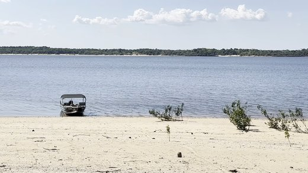

00:00:49.833
Pequena embarcação parada em uma praia de areia clara, diante do rio aberto.
Tucumã, rio Arapiuns, Santarém (PA) · confirmado
A narração situa a chegada a Tucumã após a saída de Santarém.
Transcrição · 00:00:34 | 00:00:42 | 00:00:50
Turismo Aqui — quadro de vídeo publicado no YouTube